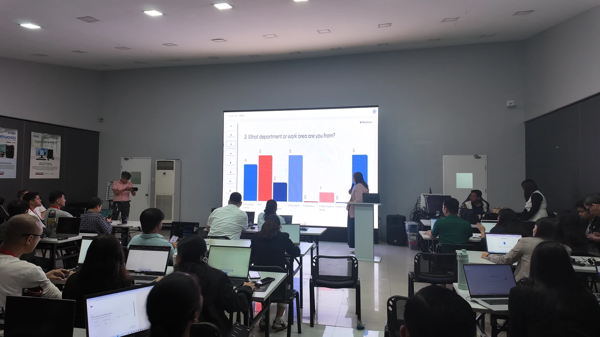

AI training built around your team.
Help your team move from AI awareness to practical adoption. Faith Works designs learning experiences around your people, priorities, and workflows, with guided practice and clear next steps.
For CEOs, HR and learning leaders, and teams navigating the future of work.

What teams come to us for
Most teams already have access to AI tools. What they need is a shared, practical way to use them well.
A common understanding of what AI can and cannot do in your work
Use cases mapped to real roles, not generic demos
Responsible-use habits: what to share, what to check, when to escalate
Confidence for non-technical leaders to guide adoption
Clear next steps, with owners, after the training ends
How we work with your team
Every engagement follows the same four steps. The depth of each step depends on the scope you choose.
Align on priorities
A discovery conversation about your goals, your people and the workflows that matter most.
Learn through relevant use cases
Sessions built from your team’s actual work, explained without jargon.
Apply AI in guided exercises
Hands-on practice on real tasks, with human review built into every exercise.
Define next implementation steps
What to adopt first, who owns it, and how you will know it is working.
Scope options to discuss
Every proposal is tailored. These are starting points for the conversation; fees are quoted in each proposal.
-
Leadership briefing
- Best forExecutives and managers setting direction
- FocusOpportunities, risks, responsible use and priorities
- Leaves you withA shortlist of use cases worth testing
-
Team workshop
- Best forOne team with shared workflows
- FocusHands-on practice on the team’s own tasks
- Leaves you withReviewed workflows the team can start using
-
Adoption program
- Best forOrganizations rolling AI out across teams
- FocusA series of sessions with practice in between
- Leaves you withAn adoption plan with owners and review points
Online, in person or hybrid formats are agreed in each proposal. Planning a conference or event talk instead? See speaking and partnerships.
Tell us your goals.
Share your team size, goals and preferred timing so we can recommend the right scope. A team member will follow up to discuss next steps.
- You send your goals
- We schedule a discovery conversation
- You receive a tailored proposal
Questions from team leaders
Do our people need a technical background?
No. Corporate training is designed for non-technical leaders and teams. We adjust depth to the group.
Can the training use our own workflows?
Yes. Sessions are built around your team’s real tasks. Tell us what data and tools are approved for use, and we design exercises within those limits.
What happens after we send the form?
Your inquiry goes to the person responsible for corporate training, who contacts you to arrange a discovery conversation.
How is pricing set?
Fees depend on scope, group size, format and travel. They are quoted in your proposal, including taxes and any extra costs.